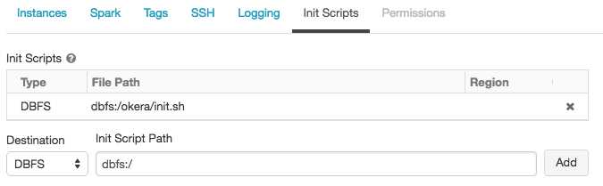
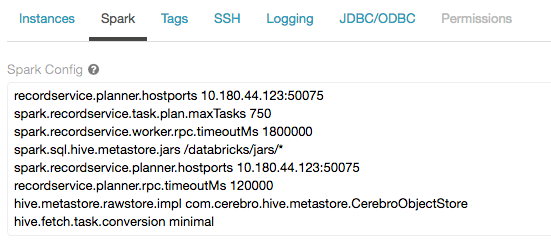

Third-Party Integration
Goals and Intended Audience
This document describes the integration between Okera and other software systems. It describes the technical details of how both systems work together to provide a seamless experience to the platform users. The intended audience is technical staff and administrators who are tasked to set up the integration.
Databricks Integration
Databricks Introduction
Okera has an integration with Databricks Analytics Platform, which offers a commercial Spark and Notebook server (among other things). Combining both systems allows the Databricks users to seamlessly use the data access and schema registry services provided by Okera.
The integration uses standard technologies and is mostly a configuration task for administrators. Both systems can be set up separately and eventually connected to each other with the steps outlined in the Configuration section. Once enabled, the authenticated Databricks users are allowed access to all Okera managed datasets, based on their personal authorization profile. The benefit of this integration is that all access to data is attributed to the proper users accounts (as opposed to a shared technical user account), and therefore reflects properly in the Okera audit event log. In addition, any granted access to the user (which is based on the combination of the roles assigned to the user’s groups, which is discussed in Authorization) is enforced as expected, and any security changes are enforced immediately.
Databricks Authentication Flow
Before enabling the integration between Okera and Databricks, it is helpful to understand the overall flow of authentication between the two platforms. The following diagram shows this in context, and has numbers for each step that are explained next:
The flow is as such:
- Any user who is communicating with the Databricks Platform needs to authenticate itself first.
- The Databricks Platform uses its own database to track known users and their authorizations.
- As soon as a user is requesting or accessing data in Spark or a Notebook from a datasource that is backed by Okera, the Databricks Platform is providing a JWT user token to the Okera client libraries. The user token is signed by a private key that is owned by Databricks.
- The JWT token contains the Databricks user name, which is the user’s email address.
- Upon receiving the request, the Okera processes will verify the provided token using the Databricks provided public key.
- Okera then uses the configured group mapping method to retrieve the user groups associated with the email prefix.
- With the groups available, the Okera Planner can retrieve the associated Policy Engine roles and verify the request, while enforcing the matching role-based access control rules.
Notes:
- Using the email prefix only, which is the part of the email before the “@” symbol, is common practice and done the same way for Kerberos principals.
- Looking up user groups based on the email prefix may require special handling, which is possible using the pluggable group mapping support.
- Okera also supports pluggable JWT token verification mechanisms, including the option to call an external verification endpoint.
Databricks Integration Configuration
The next sections explain how administrators can enable the integration between the two platforms. Note that Databricks has built-in support for the integration, but due to the nature of two separately developed software systems (for the sake of flexibility), the setup requires a few manual steps.
Databricks Steps
The following steps are required to configure the Databricks Platform and prepare the Okera setup:
- Enable the provision of the JWT token to the Okera client libraries by setting the userJwt option in the Databricks configuration. This requires contacting the Databricks support to enable this feature for your account.
- Acquire the Databricks provided public key that is used to verify the JWT tokens (used below in the Okera configuration steps). The key can be downloaded in the Admin Console within the Databricks UI.
- Copy the Okera provided libraries to the Databricks staging directory (usually in a shared “dbfs://…” location).
- Set up the init script that copies the provided JARs to the cluster specific, local directories. For example: 
- Configure, among other settings, the ODAS hostname and port number to use (see the per-component configuration documentation for details). For example (also showing more advanced settings): 
Notes:
- Most of these steps require a Databricks administrator to perform the necessary actions.
- Okera recommends to use a Databricks Runtime Version of at least 4.3. Previous versions are known to have some technical issues in combination with the ODAS integration enabled.
- See the official Databricks information about init scripts and external Hive Metastores for details.
Preparing the Libraries and Init Script
You can handle the preparatory work for steps #3 and #4 using a Databricks notebook.
First, create a new Scala notebook as usual, named for example bootstrap_okera and copy the following into the first cell:
%sh
#
# This cell downloads this version of the Okera client jars to a shared location. This by
# itself does not bootstrap any clusters.
#
# This should be run once every time the jars need to be updated and can take up to a minute.
#
VERSION=1.2.1
mkdir -p /dbfs/okera/$VERSION/jars
cd /dbfs/okera/$VERSION/jars
cp -R /databricks/hive/* .
curl -O https://s3.amazonaws.com/okera-release-useast/$VERSION/client/okera-hive-metastore.jar
curl -O https://s3.amazonaws.com/okera-release-useast/$VERSION/client/recordservice-spark-2.0.jar
curl -O https://s3.amazonaws.com/okera-release-useast/$VERSION/client/recordservice-hive.jar
Note: Adjust the
VERSIONvariable to the version of Okera you are using.
In the next cell, copy and paste the following code:
//
// This creates an init script that will place all the jars on new clusters. This can be specified
// in the cluster create UI as an init script with the path 'dbfs://okera/init.sh'
//
val VERSION = "1.2.1"
dbutils.fs.put(s"/okera/init.sh", s"""
#!/bin/sh
# -------------------------------------------------------------------------------------------
# Installs Okera JARs
# -------------------------------------------------------------------------------------------
cp /dbfs/okera/$VERSION/jars/okera-hive-metastore.jar /databricks/jars/
cp /dbfs/okera/$VERSION/jars/recordservice-spark-2.0.jar /databricks/jars/
cp /dbfs/okera/$VERSION/jars/recordservice-hive.jar /databricks/jars/
""", true)
Note: Adjust the
VERSIONvariable to the version of Okera you are using.
Run both cells to prepare the JARs and init script.
Optional Steps
The following code can be used for older versions of Databricks that do not have the above options available. See the comments in the code for where it is applicable. Copy and paste the code into another cell in the Scala notebook and execute it as necessary.
//
// Only earlier versions of databricks, where the init script cannot be configured on the
// cluster create page, the init script has to be copied to per cluster init directory.
// Note in this case, you will have to run this for each new cluster.
//
val CLUSTER_NAME = <YOUR CLUSTER NAME>
dbutils.fs.cp(s"dbfs:/okera/$VERSION/init.sh", s"dbfs:/databricks/init/$CLUSTER_NAME/")
//
// It is also possible to set the init script to be global, for all clusters. This can
// be used to make all clusters Okera enabled. We do this by copying the same init
// script to a global init directory.
//
// dbutils.fs.cp("dbfs:/okera/init.sh", s"dbfs:/databricks/init/")
Notes:
- Adjust the
<YOUR CLUSTER NAME>placeholder to match the name of the Databricks cluster you are targeting.- Uncomment the last line as needed.
Once all steps are completed you can use the Databricks UI to spin up a cluster and continue with the Okera configuration, explained next.
Okera Steps
For Okera, the steps are as such:
-
When setting up a ODAS cluster environment using the Deployment Manager, you have to use the Databricks provided public key and specify it as an environment variable.
For example, set the following variables in your specific
env.sh:export CEREBRO_JWT_PUBLIC_KEY="s3://acme-bucket/keys/databricks.pub" export CEREBRO_JWT_ALGORITHM="RSA512" -
Optionally configure a group resolution option that works for your environment.
Once these steps are completed, use the Deployment Manager to spin up an ODAS cluster with the specific environment. You should now be able to access data backed by Okera using Spark or a Notebook provided by Databricks.
Note: Okera configurations in Databricks (that is, connection and RPC timeout values) are applied at the notebook level (as opposed to per-user or per-cluster).
For additional information, see the JWT documentation.